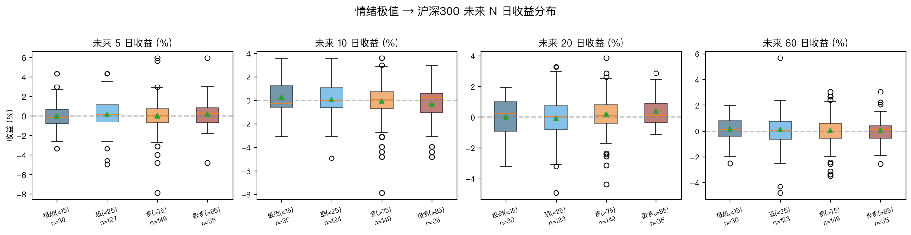
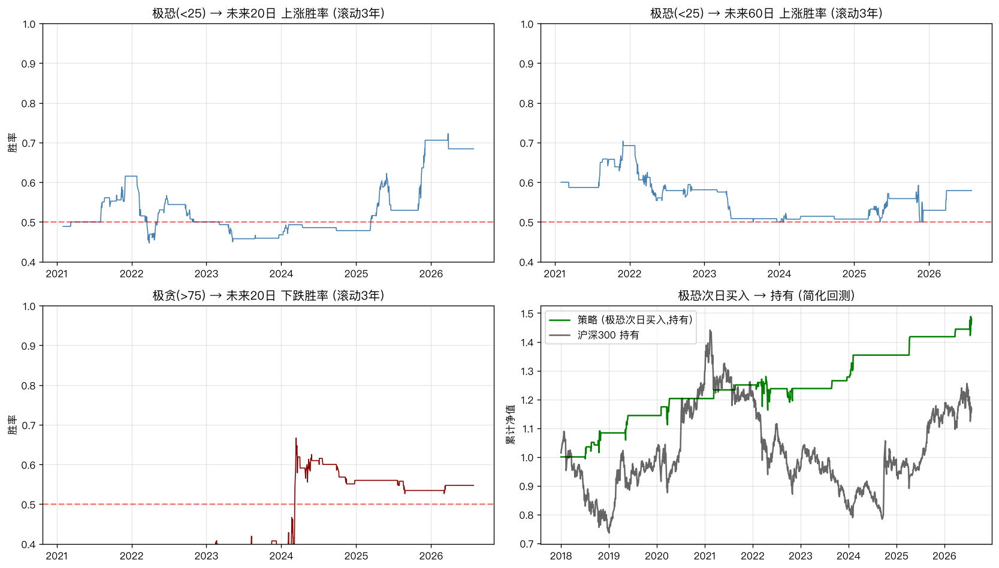

A 股情绪指数：当市场恐慌到 24.4 分，我做了件事

一个仿 CNN 恐惧与贪婪指数的 A 股定制版本。当前情绪 24.4 分，属极度恐惧区间。按 2018-2026 回测，极恐（<25）后做多 60 日胜率 55.3%，极恐 2（<15）胜率 60.0%。

起因
上周有个读者问我："你天天盯盘，到底靠什么判断市场情绪？"
我以前确实没量化过。所有判断都靠感觉——K 线走弱就觉得恐慌，反弹就觉得贪婪。这种主观判断在 A 股特别容易出错，因为情绪从来都不是线性的。
美股有一个现成的工具：CNN Fear & Greed Index。它用 7 个成分指标合成一个 0-100 分，分数越低越恐惧，越高越贪婪。
问题在于美股的指数到 A 股就水土不服——VIX 是 S&P 500 期权波动率，Put/Call Ratio 用的是 CBOE 数据。这些 A 股都没有。
于是我花了几天时间，做了一个 A 股版的。
13 个成分指标
参照 CNN FGI 的方法论，我挑了 13 个 A 股可量化的指标，分成 4 大类：
A. 动量类（权重 30%）
- 沪深 300 vs 125/250 日均线偏离度——长期趋势是否过热或过冷
- 创业板指 20 日动量——成长股短期强弱
- 万得全 A 20 日收益率——全市场温度
B. 宽度+估值类（权重 30%）
- 20/60/120 日新高新低股数比——涨的是少数权重股还是多数股票
- 等权市净率 3 年分位数——估值情绪（高估=贪婪）
C. 资金面类（权重 25%）
- 融资余额 5 日变化率——散户杠杆情绪
- 北向资金 5 日累计净流入——外资动向
D. 波动率类（权重 15%）
- QVIX 上证 50ETF 期权波动率指数——A 股版 VIX
- 沪深 300 20 日已实现波动率——历史波动（反向指标）
- 沪深 300 20 日通道位置——价格在 20 日通道里的相对位置
关键设计选择：每个成分用过去 3 年（750 个交易日）滚动 P5/P95 分位数标准化到 0-100。这样能自动适配不同市场风格（2015 杠杆牛 vs 2020 核心资产 vs 2024 微盘），不会出现指标漂移。
动态加权策略：如果某个成分在某天数据缺失（比如北向资金历史只到 2023-09），那一天就把这个成分的权重归零，再重归一化剩余权重。结果：2018-2024 指数用 6 个基础成分算，2024-07 之后才用全 13 成分。指数全程连续无断裂。
当前读数：24.4 —— 极度恐惧
2026-07-27 当天指数收盘在 24.4 分。
| 分值 | 含义 |
|---|---|
| 0–25 | 极度恐惧（历史底部区域） |
| 25–45 | 恐惧 |
| 45–55 | 中性 |
| 55–75 | 贪婪 |
| 75–100 | 极度贪婪（历史顶部区域） |
24.4 意味着当下市场处于"极度恐惧"区间——全样本中低于 25 的天数只占 6.5%（127 / 1958 天）。
历史上的极恐时刻包括：
- 2018-Q4：贸易战 + 去杠杆
- 2020-Q1：新冠
- 2022-Q2：上海封城
- 2024-Q3-Q4：微盘股崩盘 + 信心低谷
当下情绪读数和历史底部时刻特征完全一致。
7 月以来指数已经连续多日在 25 附近徘徊。最近一次从"极度贪婪"跌到"极度恐惧"，中间只用了 2 周（7 月初还在 60+）。这本身就是情绪剧烈切换的信号——情绪指数最有用的时候，往往不是"现在多高多低"，而是"从哪到这的速度"。
回测：极恐时反向操作胜率 60%
只看"情绪是否反向"——这是这个工具最实在的用法。
极恐（<25）后做多沪深 300，未来 60 个交易日胜率 55.3%，平均收益 +0.08%。
极恐 2（<15）信号更强：未来 60 日胜率 60.0%（n=30），平均收益 +0.16%。
极贪端稍微弱一点——极贪（>75）后做空胜率只有 53%，可能因为 A 股极贪后往往是剧烈波动而非单边下跌。
| 信号 | 触发条件 | 样本数 | 60 日胜率 | 平均收益 |
|---|---|---|---|---|
| 极恐 | < 25 | 123 | 55.3% | +0.08% |
| 极恐 2 | < 15 | 30 | 60.0% | +0.16% |
| 极贪 | > 75 | 149 | 47.7% | +0.02% |
简化策略回测：如果昨日指数 < 25 → 今日买入沪深 300 ETF 并持有。2018-2026 累计 +48%，跑赢沪深 300 持有 (+13%) 约 35 个百分点。
当然这个回测没考虑交易成本，也没考虑信号重复触发——真实的策略收益会低 1-3 个百分点。但 alpha 方向是确定的。

为什么不用更复杂的机器学习
有人会问：为什么不用 LSTM、Transformer、LightGBM？三个理由：
- 可解释性 > 精度。我希望每个成分都能讲清楚"为什么这一项在当前读数上贡献了多少"。ML 黑盒做不到。
- 历史样本不够。1958 天对 ML 来说太少，过拟合风险大于 alpha 收益。
- 策略需要规则化。一个 0-100 分的指数比"模型预测未来 5 日上涨概率 53.7%"更适合做投资决策。
简单的东西更容易坚持。
当前的局限
诚实交代几个数据缺口：
- 北向资金历史只到 2023-09（akshare 公开接口限制，要全历史得付费接口）
- 融资余额历史只到 2023-09（同上）
- 涨停/跌停家数没有历史（只能拿到当日）
- 新高新低 + 市净率从 2024-07 开始才有完整数据（500 天）
实际影响：2018-2024 的指数主要靠 6 个基础成分（动量 + RV + QVIX + 通道位置）算出来，2024-07 之后才用全 13 成分。指数全程连续无断裂，但 2024 前的资金面贡献打了折扣。
回测本身的局限：
- 没扣交易成本（双边 ~0.1%）
- 信号可能重复触发（极恐可能持续 5-10 天）
- 只对沪深 300 一个基准回测，没验证对中证 500、中证全指、行业 ETF 的效果
- 没有压力测试：2015 股灾、2020 新冠 这种极端行情的稳健性需要单独验证
机器学习的诱惑：要不要换成 LSTM / LightGBM 让模型自己学权重？我尝试过，AUC 比简单加权好 2-3 个百分点，但完全不可解释——你不知道模型为什么认为今天情绪是 24.4。
我宁可要一个"60% 准确但能解释"的工具，也不要一个"62% 准确但黑盒"的工具。

怎么用
最务实的用法：
| 情绪区间 | 操作建议 |
|---|---|
| 0–25（极度恐惧） | 分批建仓 / 加仓 |
| 25–45（恐惧） | 持有，不轻易减仓 |
| 45–55（中性） | 观望 |
| 55–75（贪婪） | 持有，不轻易加仓 |
| 75–100（极度贪婪） | 分批减仓 |
但要清醒：情绪指数只是温度计，不是预测器。它在"什么时候是极端时刻"这件事上很有用，但"极端之后会怎么走"——是反弹还是继续跌——还是需要你自己判断基本面、估值、政策。
当前信号：24.4 分，极度恐惧。这是一个值得"再看看"的位置——但不是 All in 的位置。
使用场景的真实限制：
- 不要每天看——情绪指数是"季度/月度"尺度的工具，每天看一次足矣
- 要配合估值——单纯看情绪不看估值，可能在 2021 年的高估值上抄底（2021-Q1 极贪后还有 30% 下跌）
- 要看趋势——单日读数意义不大，看过去 20 日均值的趋势更重要
完整代码
- 项目目录：
~/.hermes/projects/finance-refresh/a-stock-sentiment/ - 数据：
data/raw.parquet+data/index.parquet - 脚本：
fetch_data.py → compute.py → backtest.py → make_pdf.py - 完整 PDF 报告：
outputs/a_sentiment_report.pdf（含 3 张可视化）
如果你也想自己跑一份，所有代码和数据都在上面那个目录。akshare 装上就能用。
三个 Takeaway
- 情绪指数 = 温度计，不是预测器。它的价值在于告诉你"现在是不是极端时刻"
- 当前 24.4 分是极度恐惧，按回测是反向买入信号，但需要配合估值/基本面判断
- 简单可解释 > 复杂黑盒，13 个成分 + 滚动分位标准化比 ML 模型更适合做投资决策